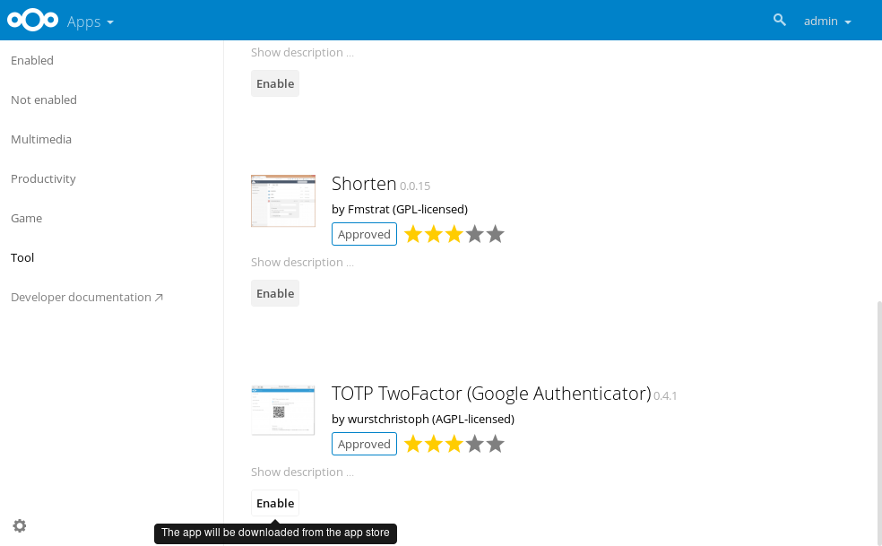

Two factor authentication¶
Starting with Nextcloud 10, it is possible to use two factor authentication (2FA) with Nextcloud. It is a plugin based system requiring a 2FA app. Several 2FA apps are already available including TOTP, SMS 2-factor and U2F. Developers can built new two-factor provider apps.
Enabling two factor authentication¶
You can enable 2FA by installing and enabling a 2FA app like TOTP which works with Google Authenticator and compatible apps. The apps are available in the Nextcloud App store so by navigating there and clicking enable for the app you want, 2FA will be installed and enabled on your Nextcloud server.

Once 2FA has been enabled, users have to activate it in their personal settings.